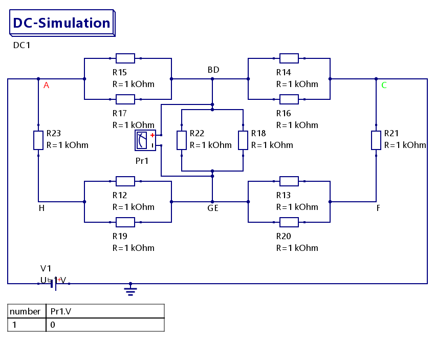

Elektrotechnik und Systemtheorie Aufgabenblatt 4
- 4.1 LED-Würfel
- a) Resultierender Widerstand RAF
- b) Resultierender Widerstand RAC
- c) Resultierender Widerstand RAB
- 4.5 Pegel-Spannungsteiler (dB)
- a) Reduzierte Spannungen UN
- b) Widerstände RN
- c) U(I) - Kennlinie und Lastgerade
- d) Schaltung mit serieller Anordnung
Für die Simulation habe ich eine Spannungsquelle an die Knoten F und A gelegt. Der Strom fließt von F durch den Würfel nach A. Der Gesamtwiderstand in so einem Würfel ist immer der Widerstand in der Raumdiagonale. Heißt RAF = RFA = Rges.
Das Schaltbild mit Stromrichtungen:

Man betrachte die Ströme. In F fließt der Gesamtstrom Iges rein und drei Ströme raus. Da alle Widerstände die gleiche Größe haben, verteilt sich der Strom gleichmäßig, heißt I1 = I2 = I3. Das führt in F zu einem Knotensatz: \[ \begin{align*} I_{ges} &= I_{1} + I_{2} + I_{3} \\ \Rightarrow I_{1} &= I_{2} = I_{3} = \frac{1}{3} I_{ges}\\ \texttt{Daraus folgt } I_{4} &= I_{5}= I_{6}= I_{7}= I_{8}= I_{9} = \frac{1}{2} I_{1} = \frac{1}{2} I_{2} = \frac{1}{2} I_{3} = \frac{1}{6} I_{ges}\\ \texttt{und daraus wiederum } I_{10} &= I_{11} = I_{12} = I_{4} + I_{9}= I_{5} + I_{6} = I_{7} + I_{8} = \frac{1}{3} I_{ges} \end{align*} \]
Um den Widerstand RAF (= RFA) zu berechenen, müssen wir erst einen Weg von F zu A finden. Der gewählte Weg führt hier von F nach C über den Widerstand R21, von C zu B über den Widerstand R14 und von B anschließend zu A. Das heißt wir haben hier drei Widerstände, an denen wir drei Spannungen haben. Diese ergeben summiert die Spannung UFA welche gleich der Spannung U0 ist. Wir haben also den Maschensatz: U0 = UFC + UCB + UBA
Überträgt man die Ströme in den Maschensatz, bekommt man folgende Gleichung:
\[ \begin{align*} U_{0} &= I_{1} \cdot R_{21} + I_{5} \cdot R_{14} + I_{11} \cdot R_{17}\\ \\ &\texttt{Da alle Widerstände gleich sind, kann man auf die Indizes verzichten:}\\ \\ U_{0} &= I_{1} \cdot R + I_{5} \cdot R + I_{11} \cdot R\\ U_{0} &= (I_{1} + I_{5} + I_{11}) \cdot R\\ U_{0} &= \frac{1}{3} I_{ges} + \frac{1}{6} I_{ges} + \frac{1}{3} I_{ges}) \cdot R\\ U_{0} &= \frac{5}{6} I_{ges} \cdot R \end{align*} \]Daraus kann man nun den Widerstand RAF berechene:
\[ \begin{align*} R_{FA} &= R_{AF} = R_{ges} = \frac{U_{FA} = U_0}{I_{FA} = I_{ges}}\\ \\ &= \frac{\frac{5}{6} \cdot I_{ges} \cdot R}{I_{ges}}\\ \\ &= \frac{5}{6} \cdot R = \frac{5}{6} \cdot 1 \texttt{ k}\Omega = \frac{5}{6} \texttt{ k}\Omega \\ \\ \end{align*} \]Man könnte auch damit argumentieren, dass die Punkte C, E und G und B, D und H jeweils auf dem gleichen Potential liegen (da die Ströme und Spannungen gleich sind), und man diese dann auch zusammen legen kann. Damit bekommen wir ein Schaltbild mit den Knoten F, CEG, BDH und A. Damit liegen jeweils R21, R13 und R20, R14, R18, R16, R22, R19 und R12 und zuletzt R17, R15 und R23 parallel zu einander.

Es ergibt sich ein Gesamtwiderstand
\[ \begin{align*} &\texttt{Formel für parallele Widerstände: }\\ \frac{1}{R_{ges}} &= \frac{1}{R_1} + \frac{1}{R_2} + \frac{1}{R_3} + ... + \frac{1}{R_n} \\ &\texttt{Da hier alle Widerstände gleich: } \\ ⇒ R_{ges} &= \frac{R}{n} \\ \\ ⇒ R_{ges} &= \frac{R}{3} + \frac{R}{6} + \frac{R}{3} = \frac{5}{6} R = \frac{5}{6} \texttt{ k}\Omega \end{align*} \]Hier noch ein Schaltbild, welches zeigt, wo Spannungen gleich sind und so auch die Potenziale.

Für diese Rechnung legen wir die Knoten G und E, und B und D zusammen. Durch die gleichen Potentiale ist dies möglich. Dann legen wir eine Spannung an A und C an.
Das zugehörige Schaltbild:
Aus dem Schaltbild kann man entnehmen, das zwischen BD und GE kein Strom fließt, da die Spannung 0 ist. D.h. wir müssen die dazwischen liegenden Widerstände nicht beachten.
Für die Rechnung heißt das:
\[ \begin{align*} R_{CA} = R_{AC} &= (R + \frac{R}{2} + \frac{R}{2} + R)||(\frac{R}{2} + \frac{R}{2}) = (3 \cdot R)||(R)\\ \\ R_{AC} &= \frac{3 \cdot R \cdot R}{3 \cdot R + R} = \frac{3 \cdot R^2}{4 \cdot R} = \frac{3}{4} R = \frac{3}{4} \texttt{ k}\Omega \end{align*} \]Diesmal legen wir die Knoten E und C, und H und D zusammen und die Spannung an A und B. Bei dieser Schaltung entfallen die Widerstände zwischen den zusammen gelegten Knoten nicht.
 \[
\begin{align*}
R_{BA} = R_{AB} &= R || \left( \frac{R}{2} + \left( \left( \frac{R}{2} + R + \frac{R}{2} \right) || \frac{R}{2} \right) + \frac{R}{2} \right)\\ \\
R_{AB} &= R || \left( \frac{R}{2} + \left( 2 \cdot R || \frac{R}{2} \right) + \frac{R}{2} \right)\\ \\
R_{AB} &= R || \left( \frac{R}{2} + \left( \frac{2 \cdot R \cdot \frac{R}{2}}{2 \cdot R + \frac{R}{2}} \right) + \frac{R}{2} \right)\\ \\
R_{AB} &= R || \left( \frac{R}{2} + \left( \frac{ R^2 }{\frac{5 \cdot R}{2}} \right) + \frac{R}{2} \right) = R || \left( \frac{R}{2} + \left( \frac{2 \cdot R }{5} \right) + \frac{R}{2} \right)\\ \\
R_{AB} &= R || \left( \frac{5 \cdot R}{10} + \frac{ 4 \cdot R}{10} + \frac{5 \cdot R}{10} \right) = R || \frac{14 \cdot R}{10} = R || \frac{7 \cdot R}{5}\\ \\
R_{AB} &= \frac{R \cdot \frac{7 \cdot R}{5}}{R + \frac{7 \cdot R}{5}} = \frac{\frac{7 \cdot R^2}{5}}{\frac{12 \cdot R}{5}} = \frac{7}{12} R = \frac{7}{12} \texttt{ k}\Omega
\end{align*}
\]
\[
\begin{align*}
R_{BA} = R_{AB} &= R || \left( \frac{R}{2} + \left( \left( \frac{R}{2} + R + \frac{R}{2} \right) || \frac{R}{2} \right) + \frac{R}{2} \right)\\ \\
R_{AB} &= R || \left( \frac{R}{2} + \left( 2 \cdot R || \frac{R}{2} \right) + \frac{R}{2} \right)\\ \\
R_{AB} &= R || \left( \frac{R}{2} + \left( \frac{2 \cdot R \cdot \frac{R}{2}}{2 \cdot R + \frac{R}{2}} \right) + \frac{R}{2} \right)\\ \\
R_{AB} &= R || \left( \frac{R}{2} + \left( \frac{ R^2 }{\frac{5 \cdot R}{2}} \right) + \frac{R}{2} \right) = R || \left( \frac{R}{2} + \left( \frac{2 \cdot R }{5} \right) + \frac{R}{2} \right)\\ \\
R_{AB} &= R || \left( \frac{5 \cdot R}{10} + \frac{ 4 \cdot R}{10} + \frac{5 \cdot R}{10} \right) = R || \frac{14 \cdot R}{10} = R || \frac{7 \cdot R}{5}\\ \\
R_{AB} &= \frac{R \cdot \frac{7 \cdot R}{5}}{R + \frac{7 \cdot R}{5}} = \frac{\frac{7 \cdot R^2}{5}}{\frac{12 \cdot R}{5}} = \frac{7}{12} R = \frac{7}{12} \texttt{ k}\Omega
\end{align*}
\]
Formel für den Leistungspegel Lu:
\[ \begin{align*} L_u &= 20 \cdot log\left( \frac{U}{U_0} \right) \end{align*} \]Da als Einheit dBu festgelegt ist, ist der Bezugswert U0 = 0,7746 V
| dBu | UN in mV |
|---|---|
| 0 | 773,82617 |
| -1 | |
| -3 | |
| -6 | |
| -10 | |
| -20 | |
| -30 | |
| -40 | |
| -50 | |
| -60 |